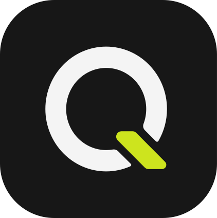
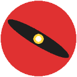

|
Znyd/Jonayed Kader Nabil | |
| I really like to train-serve-integrate smart & cheap ai models that help humans | ||
| Fast & Cheap AI == Actually Useful AI | I live in Dhaka, Bangladesh 🇧🇩 |
|
EDUCATION:
I graduated from BRAC University in Computer Science and Engineering(CSE)
with Highest Distinction (CGPA: 3.85/4.00)
with Highest Distinction (CGPA: 3.85/4.00)
ONGOING WORKS:
-
Float Crawl
[GitHub]
Turn your messy documents into structured data to use with your AI agent.
-
Bornik
[GitHub]
Bengali speech-to-text model focused on regional dialects.
-
Pure Vision
[GitHub]
Training a transformer with only visual tokens, including text rendered as images.
EXPERIENCE:

Qoarq - Founding Engineer (April 2026 - Present)
-
Architected and built the backend, database, real-time
messaging, notifications, CI/CD pipeline and improved UI perf of an agency platform.
[Link]
-
Built a school website with notice publishing system
without a database or
backend to achieve $0 maintenance cost.
[Link]
-
Designed the core architecture and development workflows for
an AI-assisted learning platform with interactive SVG animations. Currently in development.
-
Video Mammoth
[GitHub]
It is an upgrade and generalization of my undergrad thesis
[EduCut]
which was about detecting and removing irrelevant/distracting parts from
long educational lectures.
But on [Video-Mammoth]
we are trying to scale test time compute on very small VLMs for long-horizon video
understanding and QA, which will be used as an RL environment to enhance
the model's in-context learning capability.
-
Chaotic Intelligence
[GitHub]
Implemented and trained a text-to-image latent diffusion model with a ~72M-parameter
U-Net
from scratch which can generate all kinds of geometrical shapes from text instructions,
frozen VAE, CLIP and DDIM sampling were used.
Current goal is to add flow-matching and a few new one-step generation methods.
Current goal is to add flow-matching and a few new one-step generation methods.
-
Meow-former
[GitHub]
Implemented a 12-layer GPT-2 architecture in PyTorch with causal multi-head attention,
positional
embeddings, and autoregressive text generation.
-
Khudrograd
[GitHub]
Built a NumPy-based autograd engine from scratch with computational graphs, reverse-mode
differentiation, and modular neural network layers.
-
Meet When
[GitHub]
An offline-first PWA for BRACU students to share class routines and find common free
time,
with local storage and no signup.
-

Copy Gif [GitHub]
A Chrome extension that downloads GIFs from Google Images previews with one click.
-
Founder Mode
[GitHub]
A Chrome extension that blocks distracting URL patterns, intercepts SPA navigation and
adds friction before unblocking urls/websites.
-
Bangla Trek
[GitHub]
⭐ Selected for BRAC University Project Showcase.
Built a Bangladesh travel platform with destination discovery, community reviews, travel
buddy
trips, and an AI assistant grounded in place and review data.